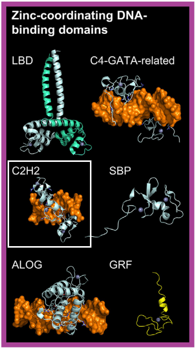

In the C2H2 fold, the "zinc finger" is a loop formed between a beta-hairpin and an alpha-helix, where the zinc atom is coordinated by two cysteine and two histidine residues. Multiple zinc fingers can wrap around the major groove of DNA through interactions between the alpha-helices and the groove. In plants, IDD transcription factors (TFs) bind DNA using two C2H2 and two C2CH zinc fingers, with the first C2H2 zinc finger being the most critical for specific binding [src]. Thus, we classified IDD TFs as a distinct family within the C2H2 class.
